UNGA - DISEC - The General Assembly (GA) is the main deliberative of the UN. By Article 10, Chapter IV of the United Nations Charter it is mandated to make recommendations to the Member Nations or to the Security Council on any matter of international significance or matters relating to all the other organs of the UN including admission of new Members Nations to the UN, and selection of Members for other organs of the United Nations. Every Member Nation of the UN is treated equally in this body by virtue of holding one vote.
Agenda : Measures to curb the growing threat of non-state actors with special focus on the Middle East
| 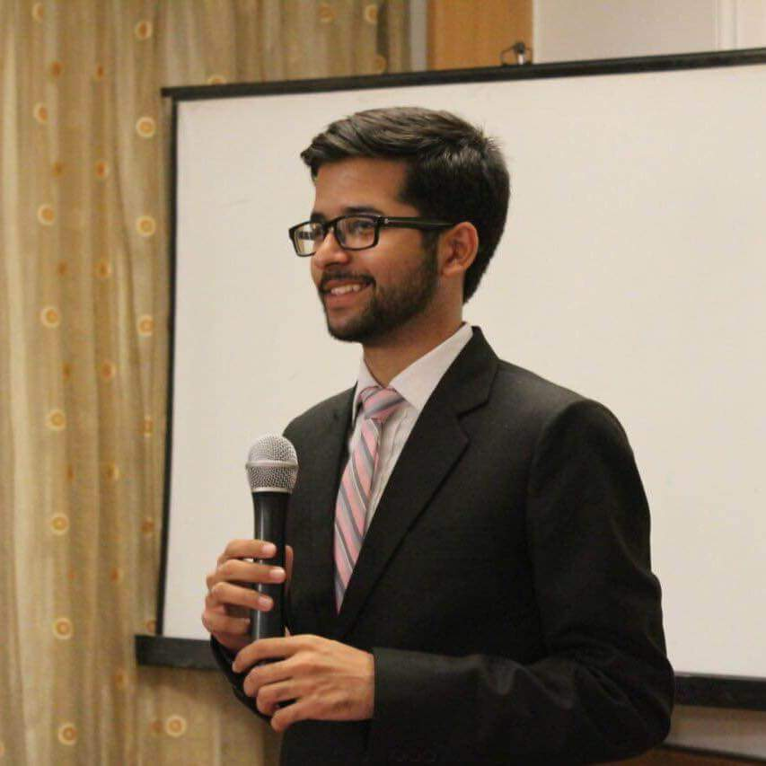 | 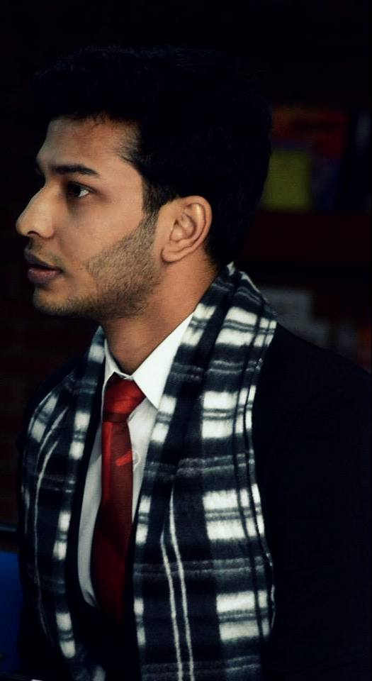 | 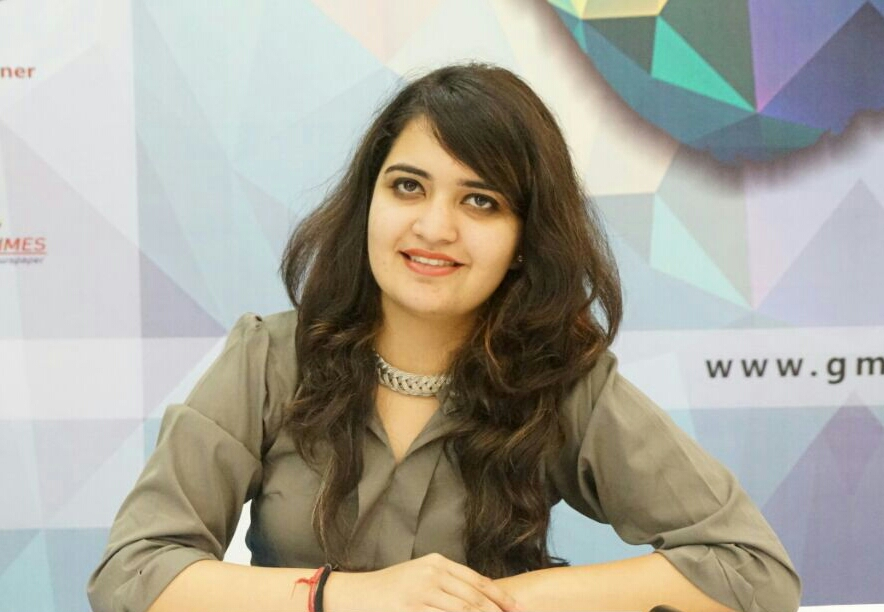 | |
| Sarthak Khanna | Satrajit Sahani | Pritika Kohli | |
| Substantive Director | Chairperson | Co-Chairperson |
The International Monetary Fund (IMF) is an organization of 189 countries, working to foster global monetary cooperation, secure financial stability, facilitate international trade, promote high employment and sustainable economic growth, and reduce poverty around the world.
Created in 1945, the IMF is governed by and accountable to the 189 countries that make up its near-global membership. Countries contribute funds to a pool through a quota system from which countries experiencing balance of payments problems can borrow money. As of 2010, the fund had SDR476.8 billion, about US$755.7 billion at then exchange rates.
The IMF, also known as the Fund, was conceived at a UN conference in Bretton Woods, New Hampshire, United States, in July 1944. The 44 countries at that conference sought to build a framework for economic cooperation to avoid a repetition of the competitive devaluations that had contributed to the Great Depression of the 1930s.
Agenda : The question of conditionality when providing loans to developing countries.
| 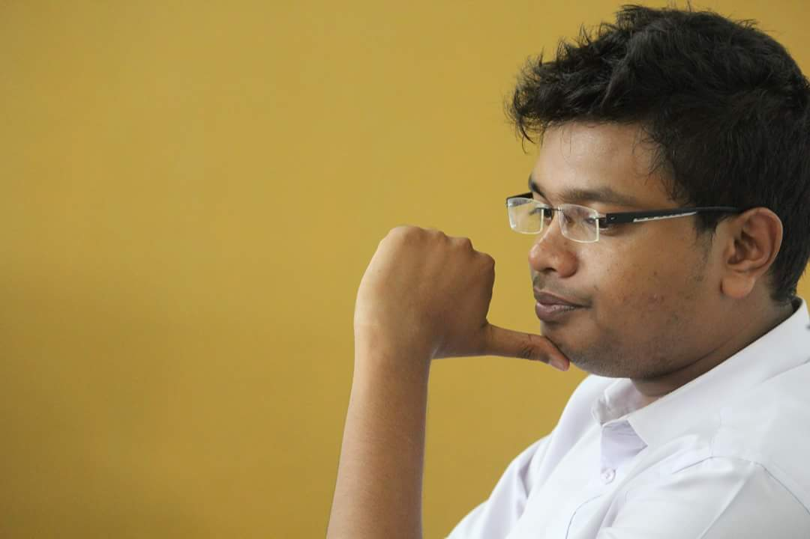 | 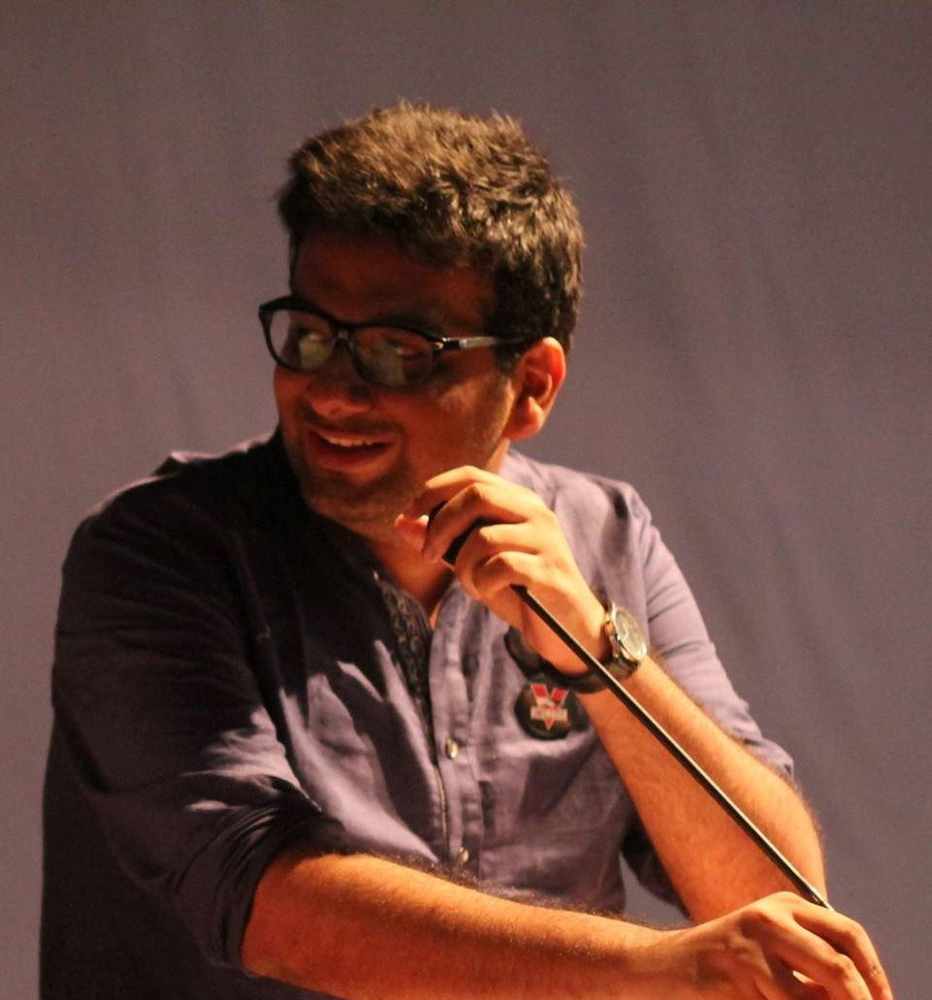 | |
| Neel Duttaroy | Sarthak Tandon | |
| Managing Director | First Deputy Managing Director |
The United Nations Environment Programme (UNEP) is the leading global environmental authority that sets the global environmental agenda, promotes the coherent implementation of the environmental dimension of sustainable development within the United Nations system and serves as an authoritative advocate for the global environment.
It was founded by Maurice Strong, its first director, as a result of the United Nations Conference on the Human Environment (Stockholm Conference) in June 1972 and has its headquarters in the Gigiri neighborhood of Nairobi, Kenya. UNEP also has six regional offices and various country offices.
Its activities cover a wide range of issues regarding the atmosphere, marine and terrestrial ecosystems, environmental governance and green economy. It has played a significant role in developing international environmental conventions, promoting environmental science and information and illustrating the way those can be implemented in conjunction with policy, working on the development and implementation of policy with national governments, regional institutions in conjunction with environmental non-governmental organizations (NGOs).
Agenda 1 : Inclusive development for sustainable growth
Agenda 2. Implementing carbon footprints as base models for industrial exchange
| 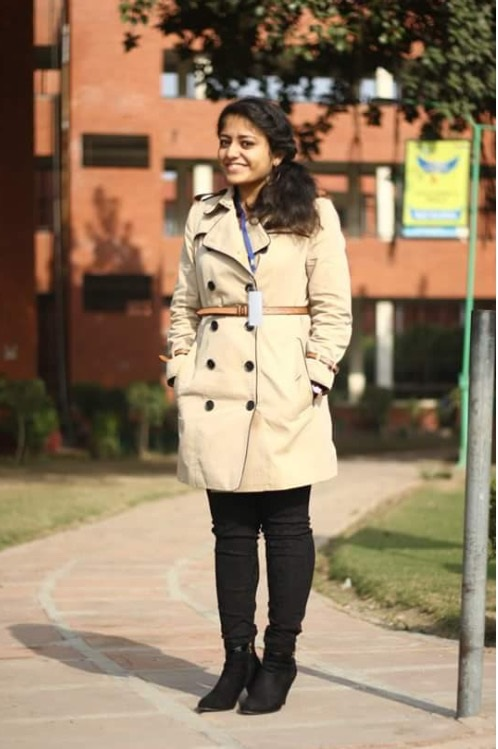 | 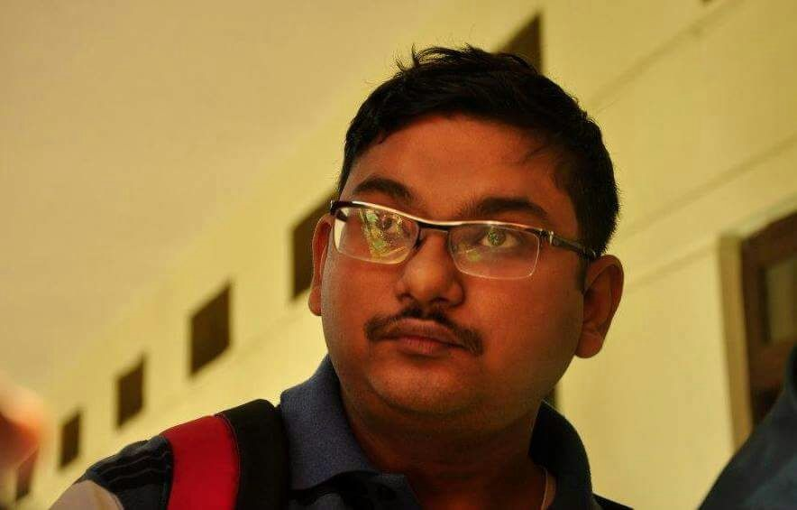 | 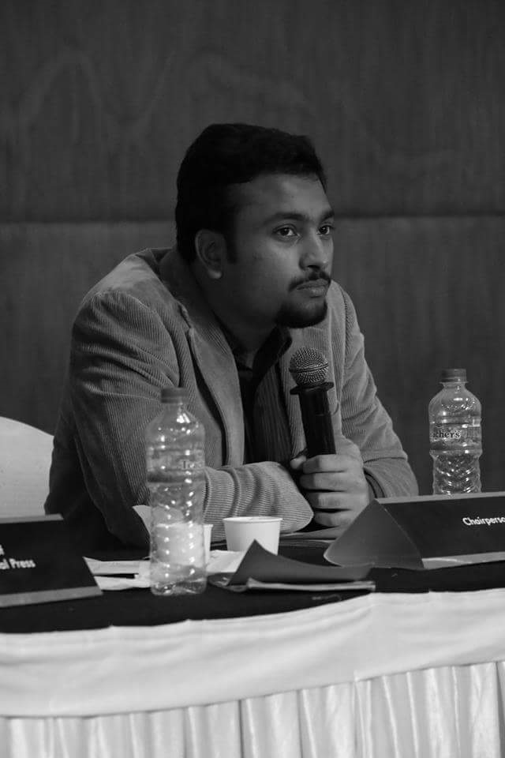 | |
| Vardha Kharbanda | Shayer Majumdar | Abhradeep Mukherjee | |
| Rapporteur | Chairperson | Vice Chairperson |
The Commission on the Status of Women (CSW or UNCSW) is a functional commission of the United Nations Economic and Social Council (ECOSOC), one of the main UN organs within the United Nations. Every year, representatives of Member States gather at United Nations Headquarters in New York to evaluate progress on gender equality, identify challenges, set global standards and formulate concrete policies to promote gender equality and advancement of women worldwide.
The Commission consists of one representative from each of the 45 Member States elected by the Council on the basis of equitable geographical distribution: thirteen members from Africa; eleven from Asia; nine from Latin America and Caribbean; eight from Western Europe and other States and four from Eastern Europe. Members are elected for a period of four years.
Among its activities, the CSW drafted several conventions and declarations, including the Declaration on the Elimination of Discrimination against Women in 1967 and women-focused agencies such as UNIFEM and INSTRAW. The Commission's priority theme for its 57th session, March 2013 was announced as the elimination and prevention of all forms of violence against women and girls. Ahead of that an Expert Group Meeting (EGM): prevention of violence against women and girls was held in Bangkok, Thailand, from 17 to 20 September 2012.
Agenda : Protection of Rights of Women with special emphasis on Reproductive Rights
| 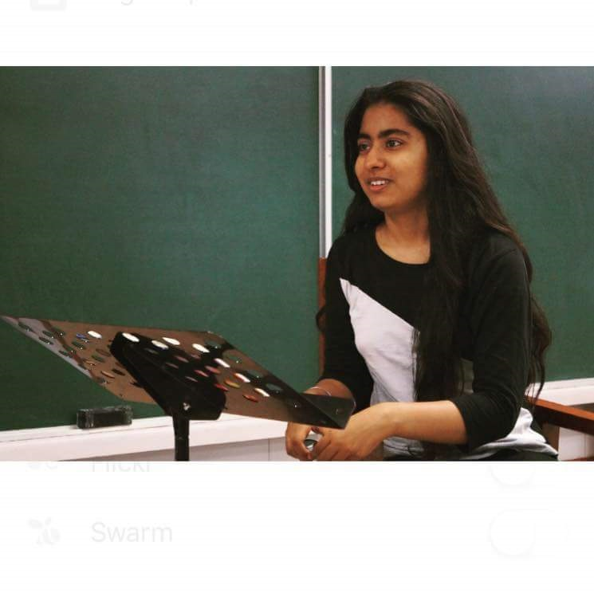 | 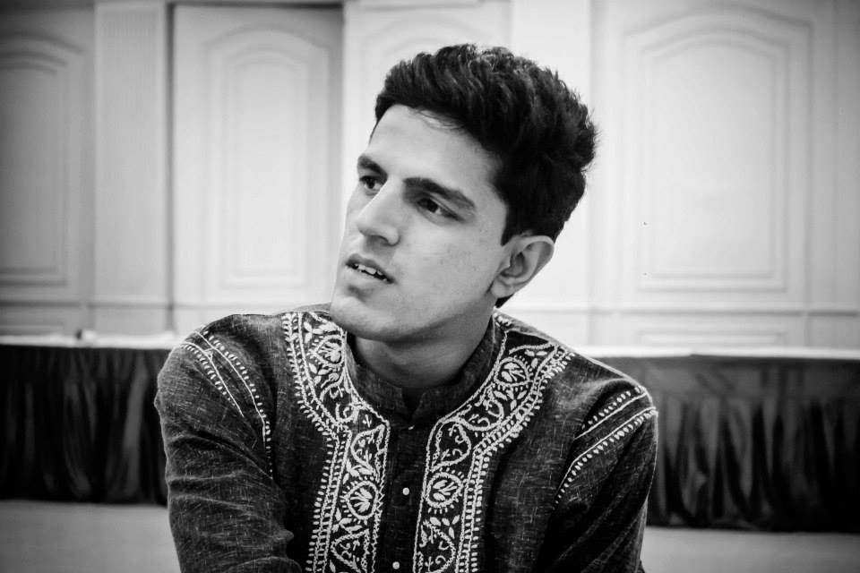 | 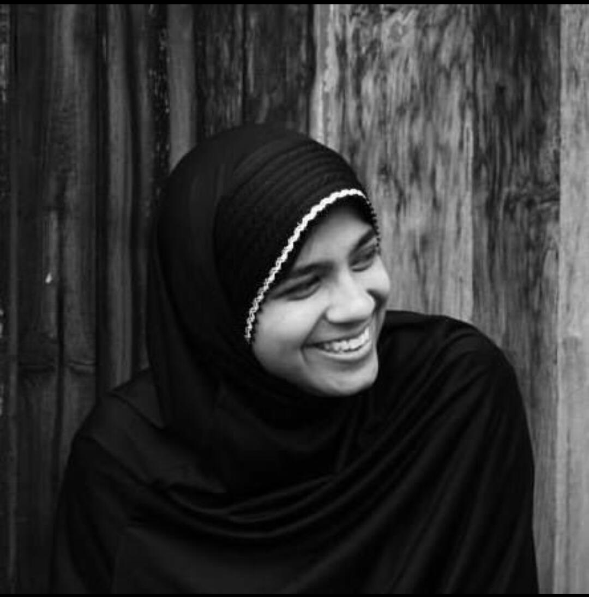 | |
| Divya Khanna | Harsh Vardhan Yadav | Syeda Sana | |
| Rapporteur | Chairperson | Vice Chairperson |
The United Nations Office on Drugs and Crime is a global leader in the fight against illicit drugs and international crime. Established in 1997 through a merger between the United Nations Drug Control Programme and the Centre for International Crime Prevention, UNODC operates in all regions of the world through an extensive network of field offices. UNODC relies on voluntary contributions, mainly from Governments, for 90 per cent of its budget.
UNODC is mandated to assist Member States in their struggle against illicit drugs, crime and terrorism. In the Millennium Declaration, Member States also resolved to intensify efforts to fight transnational crime in all its dimensions, to redouble the efforts to implement the commitment to counter the world drug problem and to take concerted action against international terrorism.
Agenda 1: Transnational operations of human trafficking with focus on sexual exploitation in South East Asia.
Agenda 2: Solving the issue of opiate trade and trafficking.
| 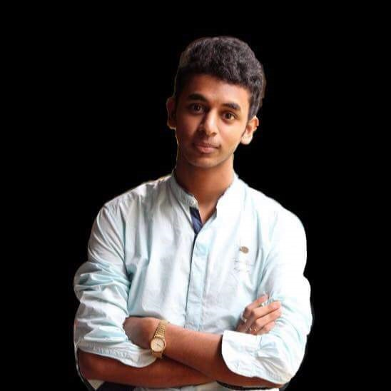 | 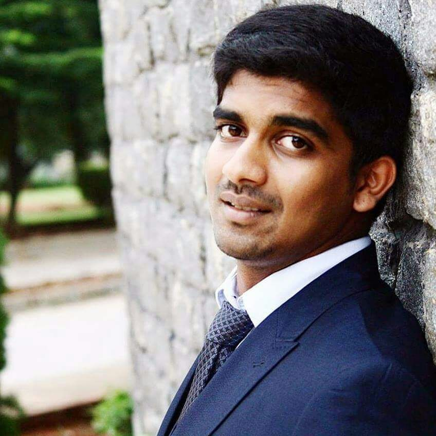 | 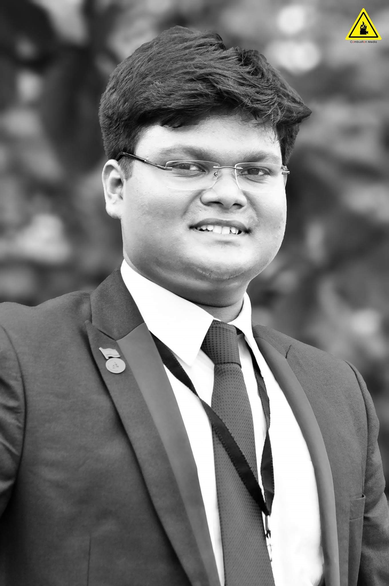 | |
| Preetam Mohanty | Aaron Mirza | Arkajit Naskar | |
| Substantive Director | Chairperson | Vice Chairperson |
Under the Charter, the Security Council has primary responsibility for the maintenance of international peace and security. It has 15 Members, and each Member has one vote. Under the Charter, all Member States are obligated to comply with Council decisions. The Security Council takes the lead in determining the existence of a threat to the peace or act of aggression. It calls upon the parties to a dispute to settle it by peaceful means and recommends methods of adjustment or terms of settlement. In some cases, the Security Council can resort to imposing sanctions or even authorize the use of force to maintain or restore international peace and security.
The Security Council also recommends to the General Assembly the appointment of the Secretary-General and the admission of new Members to the United Nations. And, together with the General Assembly, it elects the judges of the International Court of Justice.
Agenda: Situation in the Indian Subcontinent with special emphasis on Kashmir valley.
| 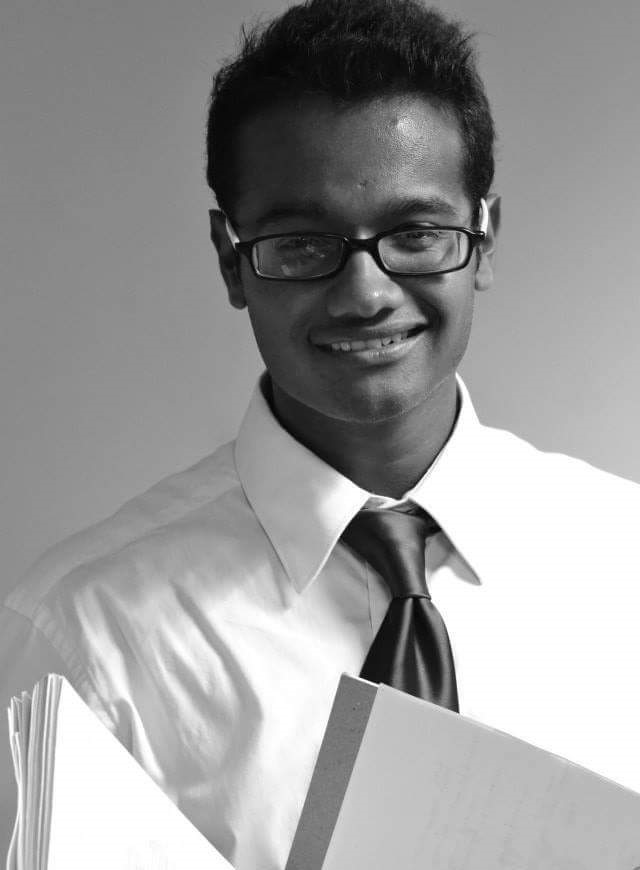 | 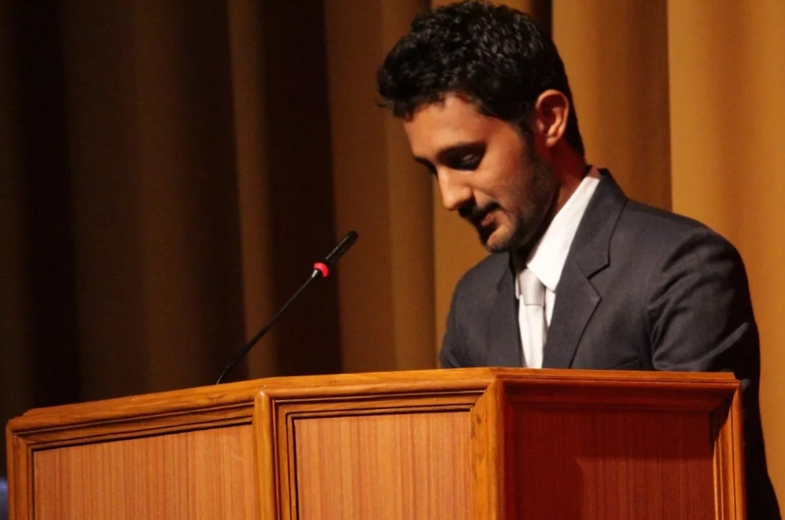 |
| Sidharth Das | Bhoomik Sharma |
| President | Vice President |
A certain refugee camp, which is currently under UN aid, has constantly been contacting the WHO about strange behavior of the people at the refugee camp. The people seem to be sick with something experts haven't really been able to identify, yet. Since the number of people showing such anomalies are increasing everyday, the team on ground is suspecting this sickness to be contagious.
The WHO has called for an emergency meeting to discuss the graveness of the problem, and devise a contingency plan.
Agenda: Confidential
| 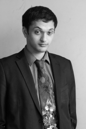 | 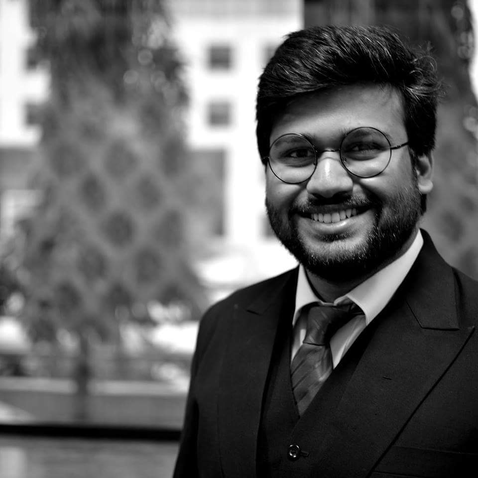 |
| Shagun Shah | Aamir Ahmed |
| Chairperson | Chairperson |